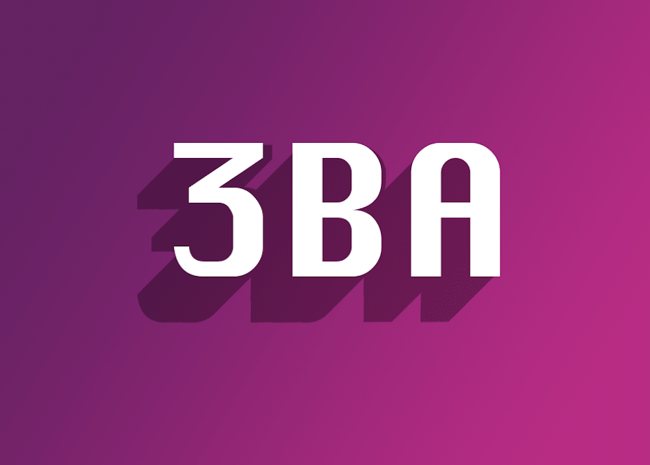
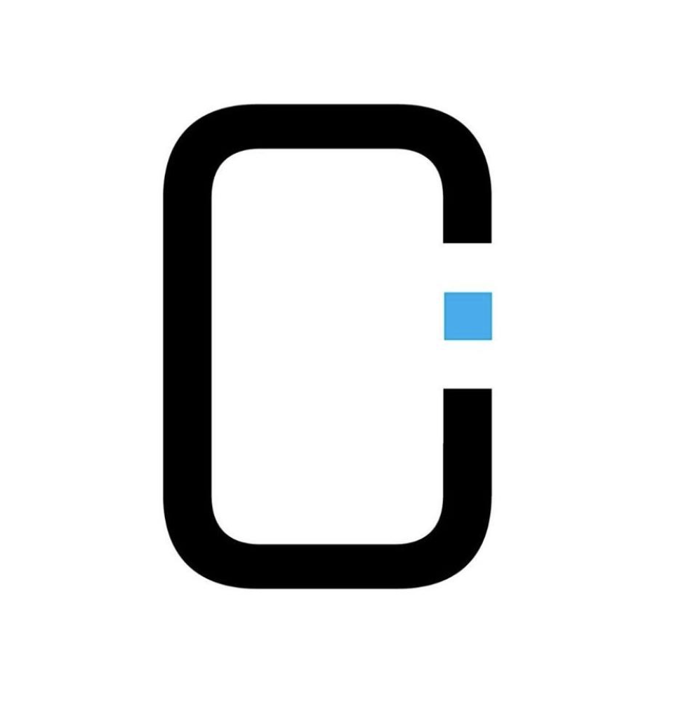
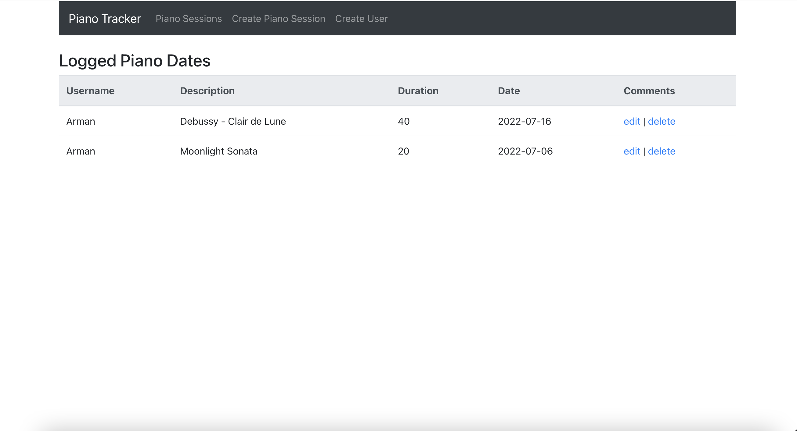
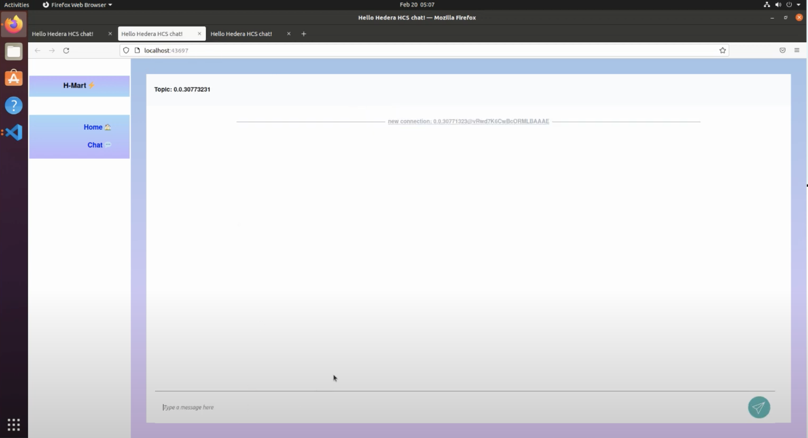
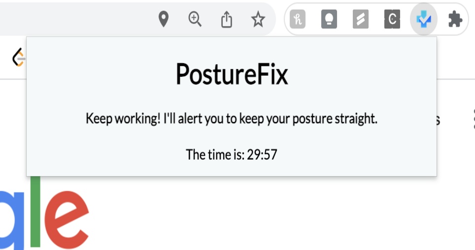
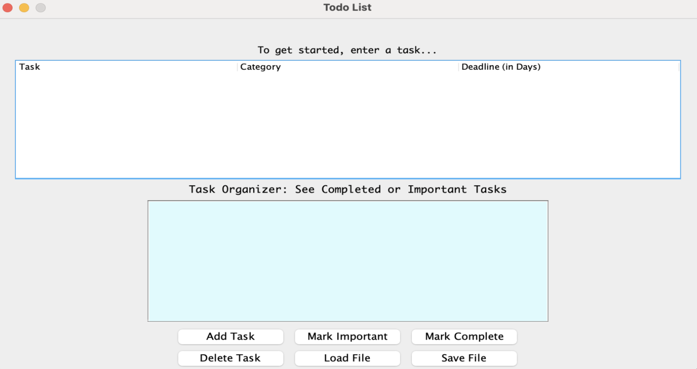

Education
University of British Columbia - Bsc Mathematics
2020-2024
Vancouver, BC
I am a third year student in the faculty of science majoring in mathematics. I have a strong passion for software,
music and 3d-printing, and am always eager to explore and learn about new technologies.
My courseload and schedule includes many technical
courses, learning essential concepts in computer science, software engineering, and data science. Currently,
I have completed courses in object-oriented programming, linear algebra, data structres and algorithms, data science, and more. Outside of school,
I have taken online courses in deep learning and AI, and continue to learn more about machine learning and web development.
Experience
April 2022 - September
At Madison's Lumber Reporter, I researched and updated Canadian and US solid wood and pulp & paper producer entries in
the company’s directory. I used advanced Excel functions and formulas to efficiently sort through our large database and updated more than
300+ entries on the database.

June 2020 - Present
As a part-time Web Developer at 3BA Printing, I developed a scalable online store to allow clients to contact, view products, and services.
I also utilized external software to create a backend to store client details and used JavaScript & HTML/CSS to design a
user interactive front-end. Finally, I helped in manufacturing and designing a biotechnology product with engineers and executives to eliminate
needle-stick injuries in healthcare

Jan 2021 - Sept 2021
I introduced young kids to introductory coding languages by running workshops in HTML/CSS, JavaScript, and Python.
I received many positive feedback from parents in regards to my teaching and engagement
with students.
Technical Projects

Piano Tracker
-- MERN Stack (MongoDB, Express, React, Node), JavaScript --
This application allows users to track their piano sessions by inputting dates, description, and their duration. They
can also choose to create, edit, and delete sessions. I developed the application
using the MERN stack (MongoDB, Express, React, Node), and created an Express server for the backend where I attached the
cors and express.json middleware, and connected it to the database.
In addition, I added API endpoints and use Postman to test the endpoint routes.

Online Transactions Platform
-- JavaScript, Node.js, Socket IO, HTML/CSS --
I developed a front-end web application allowing users to process secure transactions in cryptocurrencies. This project was developed in a hackathon called StormHacks 2022, where our team won 1st place out of 86 teams
for the category: Best Blockchain Project Using Hedera, where it was displayed nd shared within the StormHacks
community of 500+ hackers. I worked on the front-end design of our project, as well as the user interaction features such as the chat
function with JavaScript and HTML/CSS knowledge.

Posture Fix Chrome Extension
-- JavaScript, HTML, CSS --
The chrome extension reminds users to fix their posture while they work.
The application uses a built-in timer built in JavaScript that triggers a popup to alert uses to fix their posture.

Task Organizer
-- Java, JSON, JUnit --
I developed a to-do list in Java as part of my school's object-Oriented course. I
wrote unit testing frameworks using JUnit for over 4000+ lines of code and used a GUI to visualize the application.
I also received 100% code coverage using JUnit for unit testing, ensuring all cases are covered.
Interests
Programming
As an avid programmer, I am continuously learning to use my programming skills in
developing fun and interesting projects. I have always liked the idea of building applications,
and believe that the best way to learn is by building something.
Music
With music, I have always enjoyed playing the piano and guitar. I’ve been playing the piano since I was 6 and am
self-taught in guitar since grade 9. I mainly use both instruments as a means of relaxation, as it helps to clear my
mind and de-stress. Being determined to teach myself, I am proud of how far I’ve excelled through my musical journey.
Running
I enjoy running as it helps me to stay healthy and to track my physical improvement.
Having been a member of my high school’s cross-country and track & field team,
I still continue to go for runs, especially when the weather's clear.
Get In Touch
Please feel free to reach out to me by email. I am also happy to connect on Linkedin.


{kind=link}
{kind=link}
{kind=link}
{kind=link}